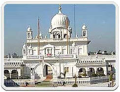

Sri Guru Angad Dev Ji, also known as Bhai Lahna Ji, was born on March 31, 1504, in the village of Sarai Naga (Matte Di Sarai), in the Muktsar district of Punjab. His father, Pheru Ji, was a small trader, and his mother was named Mata Ramo Ji, also known as Mata Sabhirai, Mansa Devi, and Daya Kaur. His grandfather, Baba Narayan Das Trehan, had an ancestral house in Matte-di-Sarai, near Mukatsar, where the family eventually settled after having to leave their ancestral village due to ransacking by the Mughal and Baloch militia.
Under the influence of his mother, Bhai Lehna Ji began to worship Durga, a Hindu mythological goddess, and would lead a group of worshippers to the Jawalamukhi Temple every year. He married Mata Khivi Ji in January 1520 and had two sons, Dasu Ji and Datu Ji, and two daughters, Amro Ji and Anokhi Ji.
After hearing a hymn of Sri Guru Nanak Dev Ji from Bhai Jodha Ji, a Sikh of Sri Guru Nanak Dev Ji, Bhai Lehna Ji decided to proceed to Kartarpur to have a glimpse of Sri Guru Nanak Dev Ji during the yearly pilgrimage to Jwalamukhi Temple. His first meeting with Sri Guru Nanak Dev Ji completely transformed him, and he renounced the worship of Hindu goddesses and became a Sikh. He dedicated himself to the service of Sri Guru Nanak Dev Ji and began to live at Kartarpur.
Sri Guru Nanak Dev Ji tested him in various ways and found him to be an embodiment of obedience and service, and he was installed as the Second Nanak in September 7, 1539, by Sri Guru Nanak Dev Ji himself. Sri Guru Nanak Dev Ji gave him a new name, Angad, and he spent six or seven years in the service of Sri Guru Nanak Dev Ji at Kartarpur.
After the death of Sri Guru Nanak Dev Ji on September 22, 1539, Sri Guru Angad Dev Ji left Kartarpur for Khadur Sahib Village (near Goindwal Sahib), where he carried forward the thoughts of Sri Guru Nanak Dev Ji in letter and spirit. He introduced a new alphabet known as Gurmukhi Script, modifying the old Punjabi Script's characters, and took great interest in the education of children by opening many schools for their instruction.
Sri Guru Angad Dev Ji wrote the first biography of Sri Guru Nanak Dev Ji by collecting facts about his life from Bhai Bala Ji. He also wrote 63 Saloks (stanzas), which were included in Sri Guru Granth Sahib Ji. He popularized and expanded the institution of 'Guru ka Langar' started by Sri Guru Nanak Dev Ji and established hundreds of new Sangats (Sikh religious institutions) to strengthen the base of Sikhism.During his period of Guruship, the Sikh community faced numerous dangers, but Sri Guru Angad Dev Ji lived Guru Nanak Sahib's tenets in true spirit, and there were manifest signs of Sikhism drifting away from Hinduism. Sikhism established its own separate religious identity, and Sri Guru Angad Dev Ji played a crucial role in its expansion and popularity.
Sri Guru Angad Dev Ji, who followed the teachings and example of Sri Guru Nanak Dev Ji, appointed Sri Guru Amar Das Ji as his successor (The Third Nanak) before his passing. He entrusted all the holy scriptures he had received from Sri Guru Nanak Dev Ji to Sri Guru Amar Das Ji. Sri Guru Angad Dev Ji passed away on March 29, 1552, at the age of forty-eight. According to some accounts, he initiated the construction of a new town at Goindwal near Khadur Sahib, and Sri Guru Amar Das Ji was assigned to oversee its development. It is also believed that when Himayun was defeated by Sher Shah Suri and lost his throne in Delhi, he sought the blessings of Sri Guru Angad Dev Ji to regain his rule.
Guru Arjan Dev Ji was born to Bibi Bhani and Jetha Sodhi in Goindval. Bibi Bhani was the daughter of Guru Amar Das Ji, and Jetha Sodhi later became known as Guru Ram Das Ji. Guru Arjan Dev Ji had two brothers, Prithi Chand and Mahadev. Although various Sikh chroniclers give his birth year as 1553 or 1563, scholarly consensus accepts the latter as the actual year of his birth, with 15 April as the accepted birth date. He spent the first 11 years of his life in Goindwal and the next seven years with his father in Ramdaspur. As per Sikh tradition, he had stayed in Lahore for two years during his youth after being sent by his father to attend the wedding of his first cousin Sahari Mal's son and establish a Sikh congregation. He was appointed as the Sikh Guru in 1581 after the death of his father, Guru Ram Das Ji, who was a Khatri of the Sodhi sub-caste. The Guruship remained in the Sodhi family of Guru Ram Das Ji with Guru Arjan Dev Ji's succession.
In the past, Punjabi language was written using the Landa or Mahajani script, which did not include vowel sounds. Readers had to interpret or imagine the vowels in order to understand the text. This posed a problem, as each reader could interpret the writing differently, leading to potential misunderstandings or misinterpretations of the message. To maintain the purity of the Gurus' teachings and prevent any misinterpretations, a new script was needed. Thus, the Gurmukhi script was developed to accurately convey the hymns of the Gurus and prevent any misunderstandings or misinterpretations that could arise from the ambiguity of the previous script.
Guru Angad Dev Ji established schools and revolutionized the Punjabi language by developing the Gurmukhi script, which made education accessible to those who were marginalized and disadvantaged in society. As a highly esteemed teacher, he personally taught children how to write Punjabi using the Gurmukhi script. This provided a means of communication and education for the general population, allowing them to pursue their own economic, educational, and spiritual aspirations without relying on the religious or political establishment. His efforts were aimed at empowering individuals to strive for greater heights in life.
During the time of Guru Nanak Dev Ji, an incomplete Punjabi alphabet existed. However, Guru Angad Dev Ji refined and perfected it. As a result, the modified alphabet was called 'Gurmukhi', which means 'that which is spoken through the mouth of the Guru'. This new script became the medium for writing the hymns of the Gurus and was also well-suited to the language of the people. While the origins of the Punjabi alphabet remain uncertain, it is evident that Guru Angad Dev Ji played a pivotal role in popularizing the use of the simplified Gurmukhi script among the Sikhs, beginning around 1541.
The creation of the Gurmukhi script was a key factor in the early Sikh community's separation from the Sanskrit religious tradition. Sanskrit was the language used by the Brahmins, the upper castes, and was reserved for the study of the Vedas, the Hindu religious texts. Lower castes and untouchables were prohibited from reading any spiritual literature, which reinforced the superiority of the upper castes. Gurmukhi allowed the Sikhs to develop their own unbiased spiritual literature and grow independently. The creation of this new script was significant for several reasons. It gave the people who spoke this language a sense of identity, allowing them to express their thoughts freely. Additionally, the guru recognized the need for a script that could accurately represent the hymns of the Gurus, maintain their purity, and prevent any misinterpretation or manipulation by readers with their own biases and prejudices.
Guru Angad Dev Ji's adoption of the Gurmukhi script was a crucial factor in facilitating the unimpeded development and growth of Sikhism. In addition, Guru Angad Dev Ji initiated the writing of the first authorized biography of Guru Nanak Ji, which was completed in 1544. Furthermore, he commissioned the writing of numerous copies of Guru Nanak Dev Ji's hymns using the new Gurmukhi script.
Guru Angad Dev ji had a keen interest in physical fitness and encouraged his devotees to participate in sports and physical activities after their morning prayers. He believed that physical fitness was essential for pursuing higher goals in life, as a sound mind can only exist in a sound body. He also provided opportunities for underprivileged sections of society to maintain good health by encouraging them to participate in wrestling bouts or Mal Akharas. Guru ji's emphasis on physical fitness and sports was also a way to break down social taboos and eliminate distinctions of caste and creed. These steps laid the foundation for a spiritually enlightened and healthy Sikh community, where everyone had equal opportunities to achieve their goals.
During that time, women were treated poorly and were considered inferior to men. They were often viewed as temptresses and confined to their homes, with no opportunity to engage in public work. However, Guru Nanak Dev Ji preached that men and women were equal in the eyes of God. He welcomed women to the Sangat, providing them with seats alongside men, and granting them religious rights that had previously been denied to them.
Guru Angad Dev ji did not work alone, and his wife, Mata Khivi, was a significant contributor to Sikhism. She played a major role in increasing women's participation in leadership positions in the Guru's court. Mata Khivi was responsible for establishing and maintaining the institution of langar, which invited all devotees of the Guru and people in general to eat together. Initially, she served food to members of the community and visitors who came to see Guru Angad Dev ji, and this practice came to symbolize the Guru's teachings, emphasizing the humanity in every person and eliminating any innate discrimination.
Mata Khivi performed her duties skillfully and selflessly, earning spontaneous respect from the people. Her role was unique and revolutionary because women were not usually seen in the forefront of society. She also ensured that the food served was nutritious and wholesome, as many who came to see the Guru were needy and destitute. Mata Khivi embraced them all and offered love and food. To use the contemporary minstrel Balwand's simile, she was like a shady tree to the Guru's disciples and provided them with effective shade. Her role and praise are recorded in the Guru Granth Sahib ji.
Guru Angad Dev ji emphasized the importance of serving and caring for all people, not just his own followers. He believed that building character was more important than simply performing rituals and following formalities. He encouraged his Sikhs to achieve enlightenment through devotion, worship of one God, and service to others. He taught his followers to seek Divine grace through prayer, singing God's praises, cultivating humility, and submitting to God's will. Merely paying a fine under pressure does not bring about goodness or merit. According to Guru Angad Dev ji, true goodness is selfless service done willingly. One must eliminate one's own pride and conceit in order to perform service to humanity. Only then will one receive honor.
Guru Angad Dev Ji emphasized the unity and oneness of God, and taught that the purpose of life is to seek God, find Him, and be united with Him. He discouraged the practice of superficial rituals and emphasized the importance of true devotion to God. According to Guru Angad Dev Ji, one must judge oneself and strive to understand the disease and the medicine to become a wise physician. Pride, greed, and ego are major obstacles to achieving true devotion and must be overcome. A spiritual guide or guru is essential to guide one on the true path. The accumulation of wealth and material possessions is ultimately meaningless, and one must focus on inner development to achieve spiritual fulfillment. Hunger and desire cannot be satisfied by material possessions or sensory experiences, but only by uttering the Glorious Praises of the Praiseworthy Lord.
According to Sikh historical accounts, during the year 1540, Humayun, the second Mughal Emperor of India, visited Guru Angad Dev Ji at Gurdwara Mal Akhara Sahib in Khadur Sahib. This was after Humayun had lost the Battle of Kannauj and consequently, his position as the Mughal ruler to Sher Shah Suri. When Humayun arrived, Guru Angad Ji was teaching children and was seated. However, Humayun was displeased when the Guru did not immediately greet him. He expressed his anger towards the Guru. Nevertheless, Guru Angad Ji reminded Humayun that during the time he had lost his throne, he had fled instead of fighting, and now he was considering attacking someone who was engaged in prayer.
According to the Sikh historical accounts, Guru Angad Ji blessed the emperor and reassured him that he would eventually regain his throne. It is important to note that these accounts were written more than a century after the event.
Guru Angad Dev Ji is known for his significant contributions in the establishment and systematization of the institution of langar in all Sikh temple premises. This allowed visitors from various locations to partake in a simple, free communal meal. He also played a crucial role in setting guidelines and training methods for volunteers, known as sevadars, who worked in the kitchen. The Guru placed emphasis on creating a peaceful and welcoming environment for all visitors, and the sevadars were trained to be polite and hospitable to all. Additionally, Guru Angad Dev Ji traveled to various places and centers established by Guru Nanak Dev Ji for the preaching of Sikhism. He established new centers and worked towards strengthening the foundation of the religion.
Guru Angad Dev Ji is associated with several historical Gurdwaras, including:
* Gurudwara Mai Bhrayi: This was the place where Guru Ji's paternal aunt, Mai Bhrayi, lived. When the Guru moved from Khadur Sahib to Kartarpur, he stayed here and worshipped in solitude.
* Gurudwara Darbar Sri Guru Angad Dev Ji, Khandi Sahib: This was a gathering place for Guru Ji and his followers where he imparted his teachings.
* Gurudwara Tapiana Sahib: This was a place where Guru Ji would worship and chant after religious gatherings.
* Gurudwara Mal Akhara: This was an arena where Guru Ji would exercise.
* Gurudwara Matte di Serai: This is the birthplace of Guru Angad Dev Ji.
* Gurdwara Khadur Sahib, Dist. Amritsar: This is where Guru Ji was appointed as the second Sikh Guru by Guru Nanak Dev Ji.
